Chapter 5 Simple regression (fixed effects)
5.1 Regression in general
Regression is the explicit modelling of a parametric association between an outcome and an exposure.
One such parametric association might be the following:
\[\text{outcome} = 3 + 2 \times \text{exposure}\]
Depending on the type of outcome, different types of regression will need to be used.
For all regressions, the exposure can be:
- Continuous
- Binary (0 or 1)
- Categorical (0, 1, 2, …)
- Count data
Regressions can both:
- Perform hypothesis testing (same as the previous tests we have learned about)
- Estimate numerically the effect size of the association between outcome and exposure (new!)
5.2 Linear regression
In the most basic form, we have:
\[\text{outcome} = \beta_0 + \beta_1 \times \text{exposure} + \text{error}\]
Where we aim to estimate values for \(\beta_0\) and \(\beta_1\).
For example, if we run an ice cream shop:
\[\text{number of ice creams sold} = 5 + 3 \times \text{temperature} + \text{error}\]
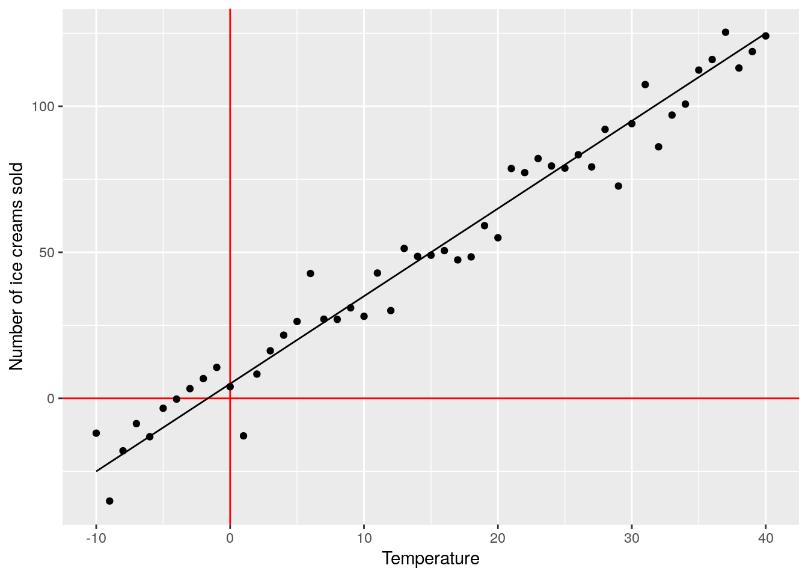
If today’s temperature is 30C, we can expect our shop to sell \(5 + 3 \times 30 = 95\) ice creams. Because \(\beta_1\) (\(=3\)) was not zero, we have a significant association between temperature and number of ice creams sold.
Another example, if we work as a midwife:
\[\text{Child's birthweight} = 3 + 0 \times \text{temperature at day of delivery} + \text{error}\]
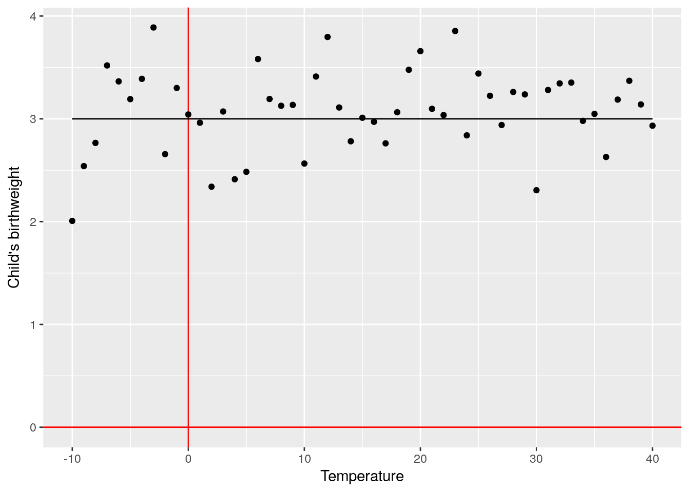
If today’s temperature is 30C, we can expect that children born today will be (on average) \(3 + 0 \times 30 = 3\) kg. If tomorrow’s temperature is 10C, we can expect that children born today will be (on average) \(3 + 0 \times 10 = 3\) kg. Because \(\beta_1\) was zero, we do not have a significant association between temperature and birthweight.
5.2.1 Aim/Outcome/Exposure/Parametric/Dependencies
Aim: Hypothesis testing and estimating the effect size of the association between outcome and exposure
Outcome: Continuous variable
Exposure: Continuous, Binary, Categorical, Count variable
Parametric assumptions: Residuals are distributed as a Normal distribution
Dependencies: None (all observations independent)
5.2.2 Example 1
\(\rightarrow\) Testing if average birth weight (continuous outcome) is associated with parents’ income (continuous exposure)
\[\text{birth weight} = \beta_0 + \beta_1 \times \text{parent's income} + \text{error}\]
\[\text{H}_0: \beta_1 = 0\] \[\text{H}_1: \beta_1 \ne 0\]

5.2.3 Example 2
\(\rightarrow\) Testing if average birth weight (continuous outcome) is associated with child’s sex (binary exposure)
\[\text{birth weight} = \beta_0 + \beta_1 \times \text{is boy} + \text{error}\]
\[\text{H}_0: \beta_1 = 0\] \[\text{H}_1: \beta_1 \ne 0\]
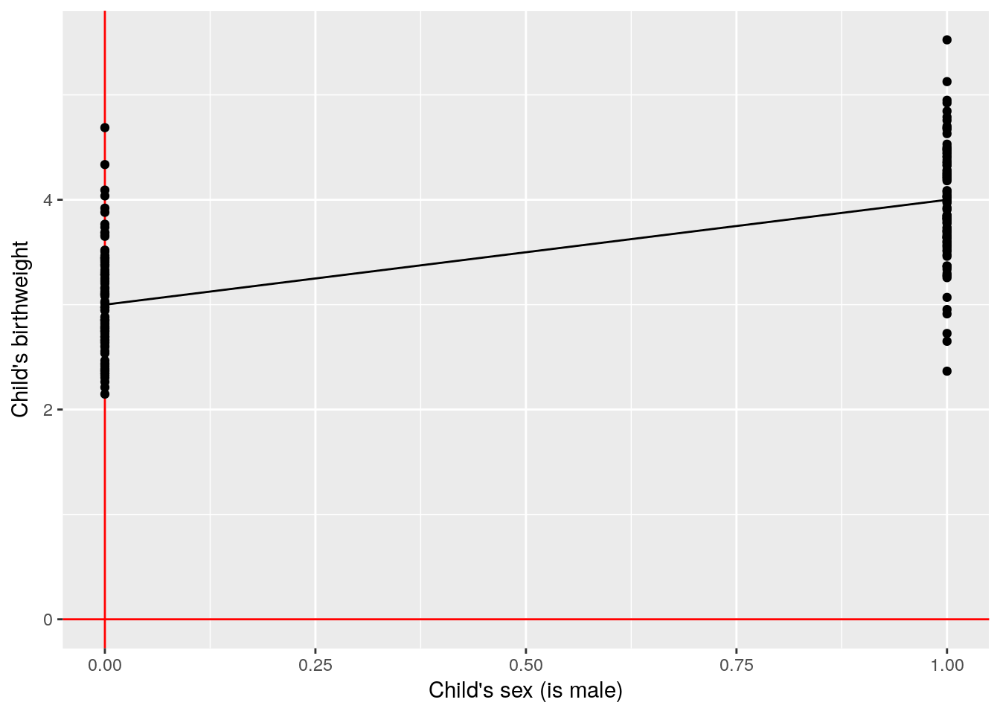
5.2.4 Example 3
\(\rightarrow\) Testing if average BMI levels (continuous outcome) differ across Scandinavia (categorical exposure)
\[\text{bmi} = \beta_0 + \beta_1 \times \text{is Norway} + \beta_2 \times \text{is Sweden} + \text{error}\]
\[\text{H}_0: \beta_1 = \beta_2 = 0\] \[\text{H}_1: \beta_1 \ne 0 \text{ and/or } \beta_2 \ne 0\]
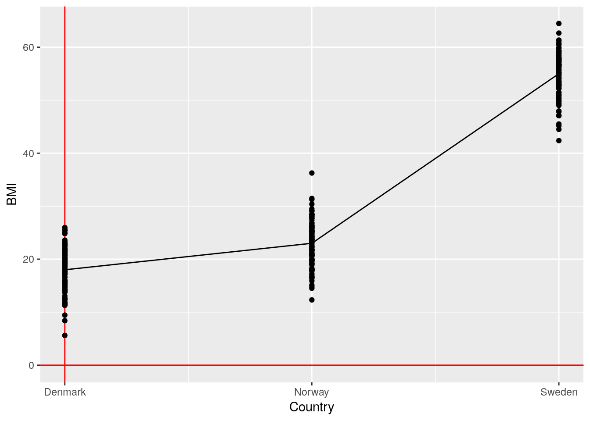
5.2.5 Example 4
\(\rightarrow\) \(H_0:\) \(H_1:\)
5.2.6 Example 5
\(\rightarrow\) \(H_0:\) \(H_1:\)
5.3 Similarities between t-tests, ANOVA, and linear regression
5.3.1 Example 1
Two-sample unpaired t-test:
\(\rightarrow\) Testing if average birth weight (continuous outcome) is different in female children versus male children
\[\text{H}_0: \mu_{\text{boys}} = \mu_{\text{girls}}\] \[\text{H}_1: \mu_{\text{boys}} \ne \mu_{\text{girls}}\]
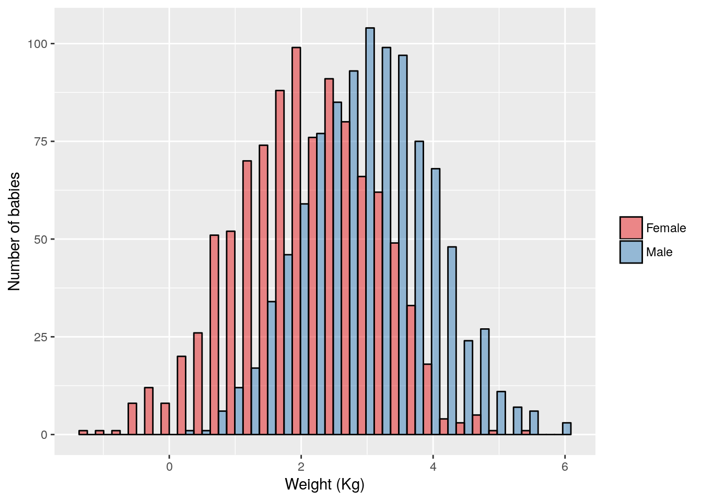
ANOVA:
\(\rightarrow\) Testing if average birth weight (continuous outcome) is different in female children versus male children
\[\text{H}_0: \mu_{\text{boys}} = \mu_{\text{girls}}\] \[\text{H}_1: \mu_{\text{boys}} \ne \mu_{\text{girls}}\]
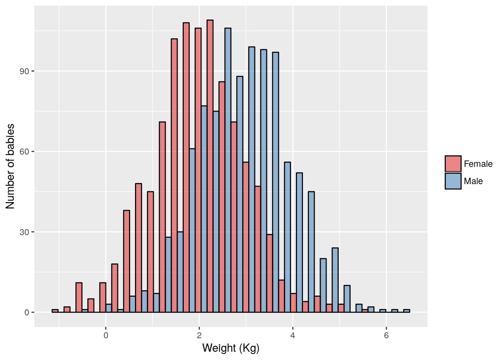
Linear regression:
\(\rightarrow\) Testing if the effect of child’s sex on average birth weight (continuous outcome) is different than zero
\[\text{birth weight} = \beta_0 + \beta_1 \times \text{is boy} + \text{error}\] \[\text{H}_0: \beta_1 = 0\] \[\text{H}_1: \beta_1 \ne 0\]
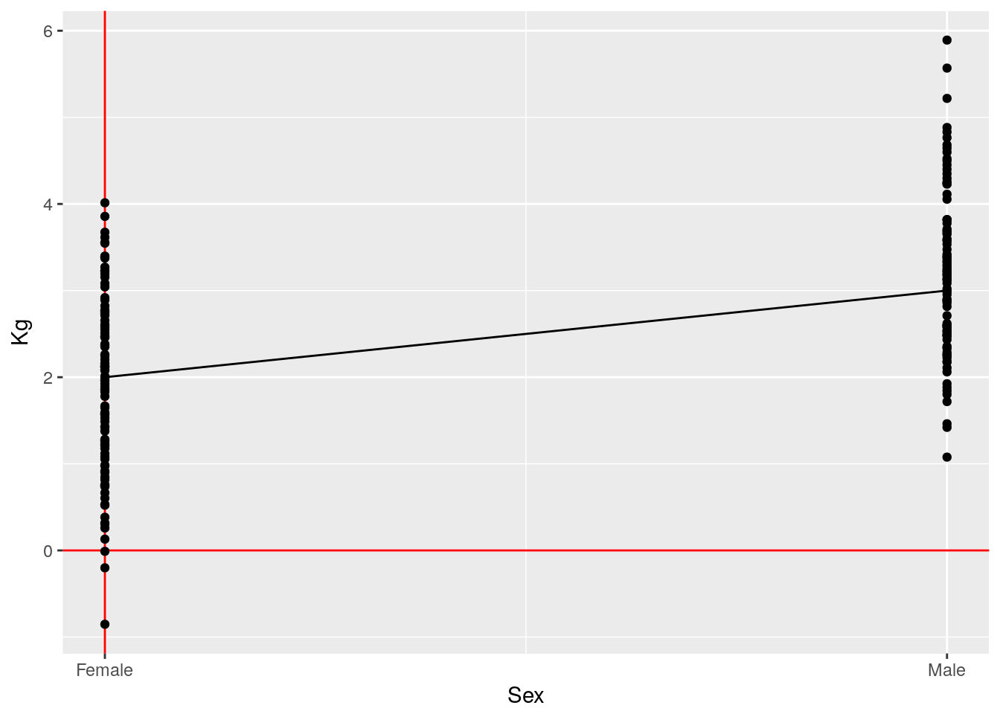
Conclusion:
- Two-sample unpaired t-tests are ANOVAs with only two groups
- Two-sample unpaired t-tests are linear regressions with a binary (0/1) exposure
- ANOVA is a linear regression with a categorical exposure
5.3.2 Example 2
Two-sample unpaired t-test:
\(\rightarrow\) Testing if average number of hours sleep (continuous outcome) is different in adults who are parents versus those who are childless
\[\text{H}_0: \mu_{\text{parents}} = \mu_{\text{childless}}\] \[\text{H}_1: \mu_{\text{parents}} \ne \mu_{\text{childless}}\]
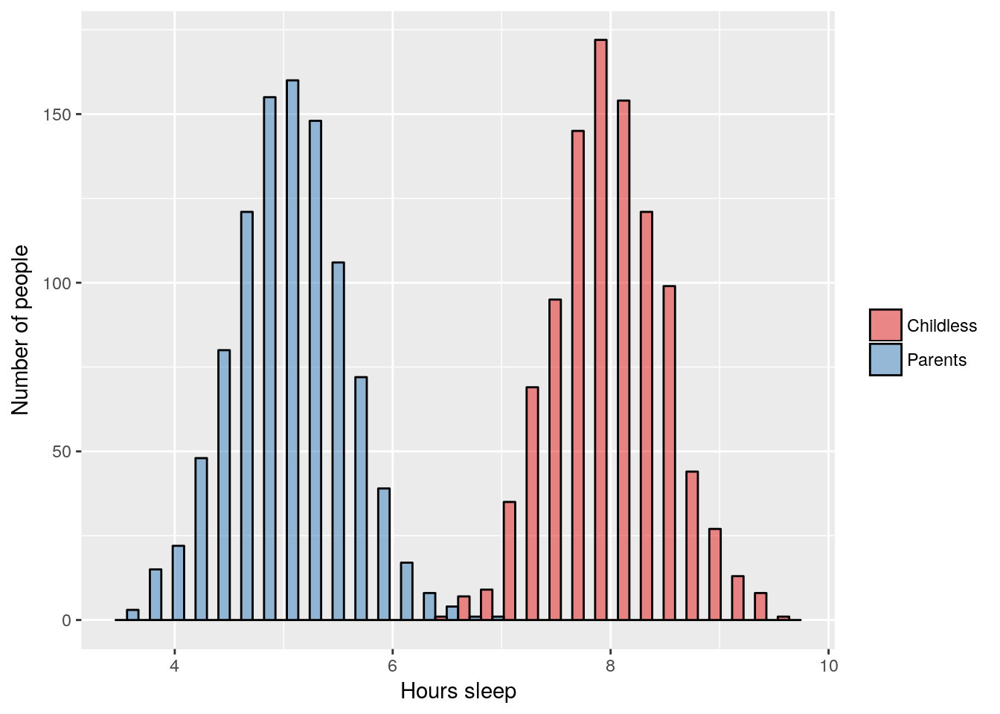
ANOVA:
\(\rightarrow\) Testing if average number of hours sleep (continuous outcome) is different in adults who are parents versus those who are childless
\[\text{H}_0: \mu_{\text{parents}} = \mu_{\text{childless}}\] \[\text{H}_1: \mu_{\text{parents}} \ne \mu_{\text{childless}}\]
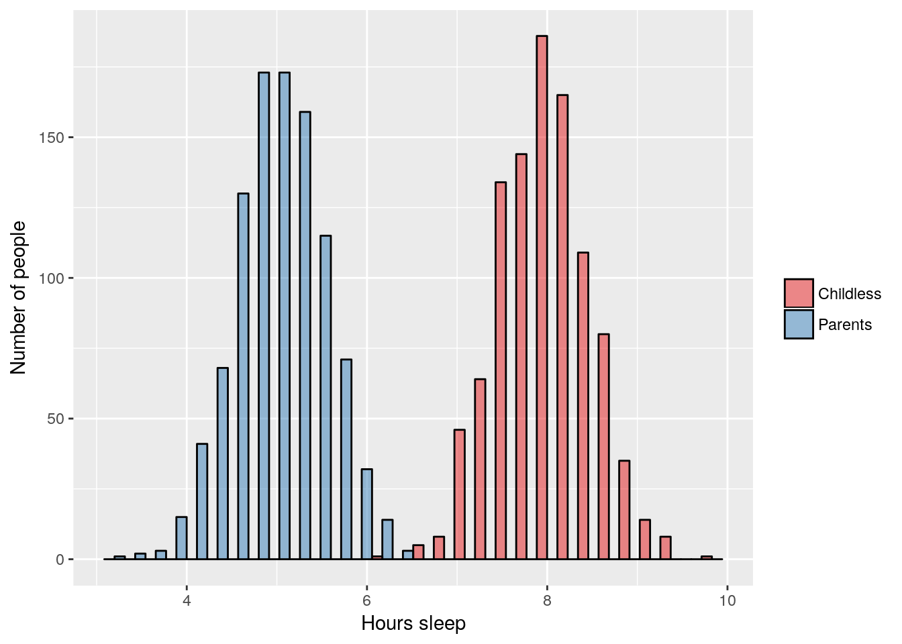
Linear regression:
\(\rightarrow\) Testing if the effect of being a parent on average number of hours sleep (continuous outcome) is different than zero
\[\text{birth weight} = \beta_0 + \beta_1 \times \text{is parent} + \text{error}\] \[\text{H}_0: \beta_1 = 0\] \[\text{H}_1: \beta_1 \ne 0\]
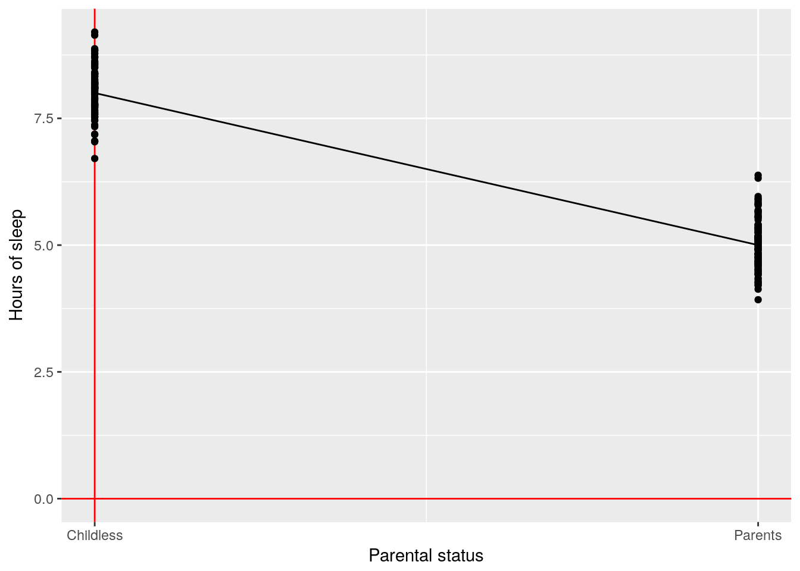
Conclusion:
- Two-sample unpaired t-tests are ANOVAs with only two groups
- Two-sample unpaired t-tests are linear regressions with a binary (0/1) exposure
- ANOVA is a linear regression with a categorical exposure
5.3.3 Example 3
Two-sample unpaired t-test:
\(\rightarrow\) \(H_0:\) \(H_1:\)
ANOVA:
\(\rightarrow\) \(H_0:\) \(H_1:\)
Linear regression:
\(\rightarrow\) \(H_0:\) \(H_1:\)
5.4 Similarities between ANOVA and linear regression
5.4.1 Example 1
ANOVA:
\(\rightarrow\) Testing if average birth weight (continuous outcome) differs between Scandinavian countries
\[\text{H}_0: \mu_{\text{Norway}} = \mu_{\text{Denmark}} = \mu_{\text{Sweden}}\] \[\text{H}_1: \mu_{\text{Norway}} \ne \mu_{\text{Denmark}} \text{ and/or } \mu_{\text{Norway}} \ne \mu_{\text{Sweden}} \text{ and/or } \mu_{\text{Denmark}} \ne \mu_{\text{Sweden}}\]
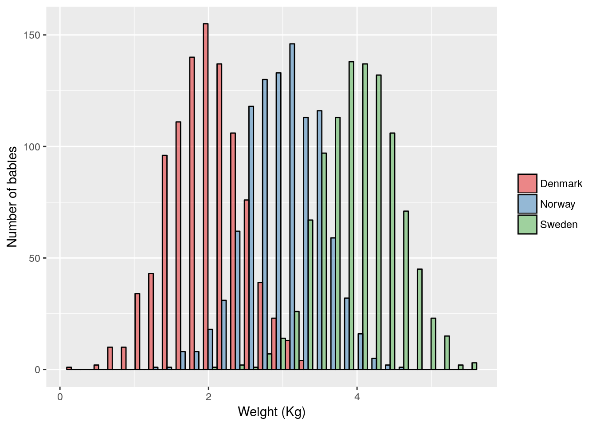
Linear regression:
\(\rightarrow\) Testing if the effect of country on average birth weight (continuous outcome) is different than zero
\[\text{birth weight} = \beta_0 + \beta_1 \times \text{is Norway} + \beta_2 \times \text{is Denmark} + \text{error}\] \[\text{H}_0: \beta_1 = \beta_2 = 0\] \[\text{H}_1: \beta_1 \ne 0 \text{ and/or } \beta_2 \ne 0\]
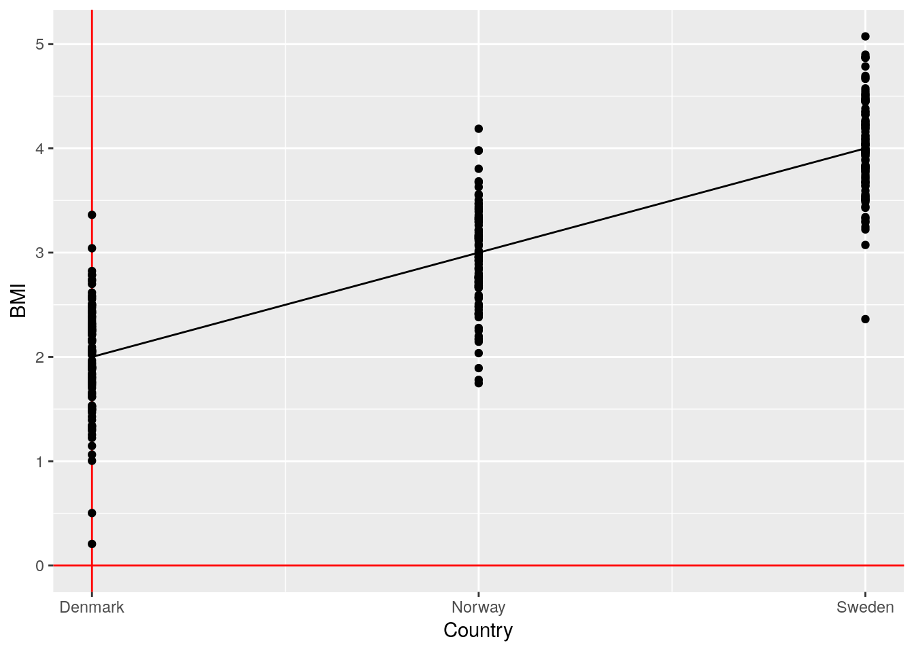
Conclusion:
- ANOVA is a linear regression with a categorical exposure
5.4.2 Example 2
ANOVA:
\(\rightarrow\) \(H_0:\) \(H_1:\)
Linear regression:
\(\rightarrow\) \(H_0:\) \(H_1:\)
5.5 Logistic regression models
Logistic regression is essentially the same as linear regression, but it is used when:
- You have a binary (0/1) outcome
- You are doing a case-control study [case control studies can ONLY be analysed using logistic regression]
5.5.1 Aim/Outcome/Exposure/Parametric/Dependencies
Aim: Hypothesis testing and estimating the effect size of the association between outcome and exposure
Outcome: Binary variable
Exposure: Continuous, Binary, Categorical, Count variable
Parametric assumptions: No
Dependencies: None (all observations independent)
5.5.2 Example 1
\(\rightarrow\) Testing if percentage of women (binary outcome) differ across the bydels of Oslo (categorical exposure)
\[\text{log}\left(\frac{\text{Pr(Is woman)}}{\text{Pr(Is man)}}\right) = \beta_0 + \beta_1 \times \text{bydel}_1 + \beta_2 \times \text{bydel}_2 + \beta_3 \times \text{bydel}_3 + \text{error}\]
\[\text{H}_0: \beta_1 = \beta_2 = \beta_3 = 0\] \[\text{H}_1: \beta_1 \ne 0 \text{and/or} \beta_2 \ne 0 \text{and/or} \beta_3 \ne 0\]
5.5.3 Example 2
\(\rightarrow\) Testing if risk of unemployment (binary outcome) is associated with parents’ income (continuous exposure)
\[\text{log}\left(\frac{\text{Pr(Is unemployed)}}{\text{Pr(Is employed)}}\right) = \beta_0 + \beta_1 \times \text{parent's income} + \text{error}\]
\[\text{H}_0: \beta_1 = 0\] \[\text{H}_1: \beta_1 \ne 0\]
5.5.4 Example 3
\(\rightarrow\) Testing if risk of smoking (binary outcome) is associated with parents’ smoking status (binary exposure)
\[\text{log}\left(\frac{\text{Pr(Is smoker)}}{\text{Pr(Is not smoker)}}\right) = \beta_0 + \beta_1 \times \text{parent's are smokers} + \text{error}\]
\[\text{H}_0: \beta_1 = 0\] \[\text{H}_1: \beta_1 \ne 0\]
5.5.5 Example 4
\(\rightarrow\) \(H_0:\) \(H_1:\)
5.5.6 Example 5
\(\rightarrow\) \(H_0:\) \(H_1:\)
5.6 Poisson/negative-binomial regression models
Poisson/negative-binomial regression is essentially the same as linear regression, but it is used when:
- You have a count outcome
Negative-binomial regression is a more flexible version of poisson regression. Poisson regression requires that the residual variation (after fitting the model) is equal to the expected mean. This is quite often not the case. Negative-binomial regression fits the variation and the mean separately, removing this problem. It is therefore recommended that you always use a negative-binomial regression instead of a poisson regression. The only exception is if you encounter statistical errors with the negative-binomial regression (i.e. it won’t converge/run), then a poisson regression is your only option.
5.6.1 Aim/Outcome/Exposure/Parametric/Dependencies
Aim: Hypothesis testing and estimating the effect size of the association between outcome and exposure
Outcome: Count variable
Exposure: Continuous, Binary, Categorical, Count variable
Parametric assumptions for Poisson: Mean equals variable
Parametric assumptions for negative-binomial: No
Dependencies: None (all observations independent)
5.6.2 Example 1
\(\rightarrow\) Testing if average number of influenza cases (count outcome) is different between 2000-2009 and 2010-2015 (binary exposure) in Norway
\[\text{yearly number of influenza cases} = \beta_0 + \beta_1 \times \text{is 2010 to 2015} + \text{error}\]
\[\text{H}_0: \beta_1 = 0\] \[\text{H}_1: \beta_1 \ne 0\]
5.6.3 Example 2
\(\rightarrow\) \(H_0:\) \(H_1:\)
5.7 Cox regression models should be used
Cox regression models should be used when your outcome is “time-to-event”.
The most common example of this is when you are following a cohort of people over time, trying to observe an (e.g. sickness, death, response). Your outcome is “length of time until person X gets disease Y”. However, a number of your participants stop responding at some point, so you only know “person X was healthy up until 200 days, when we lost contact”.Thus person X’s outcome has been censored at day 200.
5.7.1 Aim/Outcome/Exposure/Parametric/Dependencies
Aim: Hypothesis testing and estimating the effect size of the association between outcome and exposure
Outcome: Censored variable (time-to-event)
Exposure: Continuous, Binary, Categorical, Count variable
Parametric assumptions: Proportional hazards
Dependencies: None (all observations independent)
5.7.2 Example 1
\(\rightarrow\) Testing if time-to-death (outcome) is associated with having a hospital-acquired-infection after hip surgery (binary exposure)
\[\lambda(t | X_i) = \lambda_0(t) \times \text{exp}(\beta_1 \times \text{had HAI})\]
Where \(\lambda(t | X_i)\) is the hazard rate of dying at time \(t\) for subject \(i\).
\[\text{H}_0: \beta_1 = 0\] \[\text{H}_1: \beta_1 \ne 0\]
5.7.3 Example 2
\(\rightarrow\) \(H_0:\) \(H_1:\)